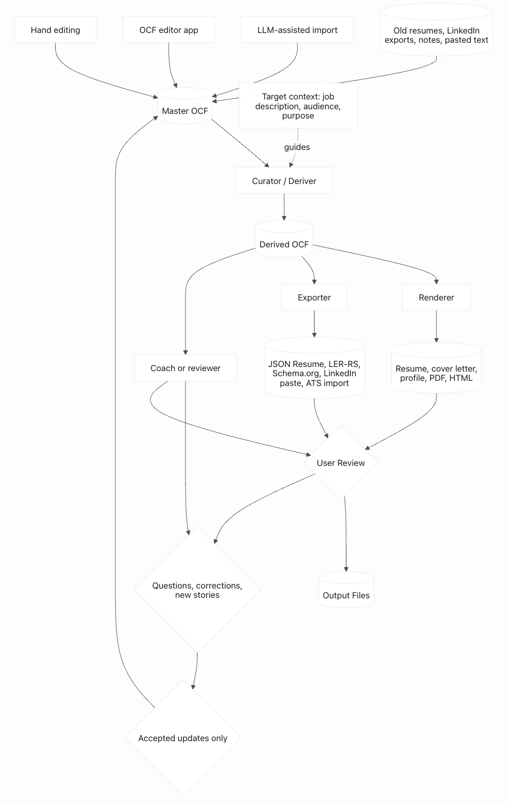

Un cuaderno privado de carrera que puede convertirse en cada currículum que necesites.
OCF conserva lo que hiciste, qué cambió, qué aprendiste y qué importó, para que esté disponible la próxima vez que lo necesites.
Sitio actualizado por última vez: 2026-07-13
¿Estás postulando a un trabajo ahora? Si te sientes cómodo compartiendo los materiales con el LLM o herramienta que estás usando, adjunta tu currículum y la descripción del puesto. No incluyas nada que esa herramienta no deba procesar.
Mejor experiencia con agente local: si tu herramienta admite skills, empieza con el skill OCF Start. Te dirige al flujo OCF correcto. El skill OCF Setup puede organizar tu archivo master local, backups, materiales fuente y outputs de postulaciones.
Los skills y los prompts usan la misma guía OCF. El prompt funciona en cualquier lugar donde puedas pegar texto. El skill agrega gestión local de archivos: dónde vive el master, dónde van los backups, dónde se guardan las fuentes y dónde queda cada output de una postulación. Todo sigue bajo tu control, abierto y legible.
Funciona en cualquier chat: prompt para copiar
Usando solo este bootstrap de OCF:
https://opencareerformat.org/prompts/application-bootstrap.es.md
más mi currículum y descripción del puesto adjuntos, ayúdame a crear un mejor currículum y carta de presentación para este rol.
No busques consejos generales sobre prompts, currículums, schemas ni contexto de fondo a menos que yo lo pida.
Primero dame la lectura de brechas: qué pide el trabajo, qué prueba mi currículum y qué falta o tiene poca evidencia. Haz como máximo tres preguntas concretas. Después de que responda, redacta el currículum y la carta. Antes de crear o actualizar el archivo OCF, pídeme una historia sobre mi trabajo que nunca pondría en un currículum formal y consérvala en mis propias palabras. Luego crea un archivo OCF candidate-master o un conjunto propuesto de actualizaciones OCF para la próxima vez, y recuérdame guardarlo junto a mi currículum.
Guarda el archivo OCF junto a tu currículum. La próxima vez, adjunta ambos.
¿Estás creando herramientas? Empieza con usage patterns.
Cómo se ve en la práctica
El currículum de Maria decía: "Led response to a ransomware incident and restored critical clinical systems within 41 hours." Una primera sesión convirtió ese bullet en memoria profesional estructurada: el juicio detrás de la decisión, las métricas, la redacción para distintas audiencias y las afirmaciones que no debía exagerar. Y una petición de una historia de trabajo reveló cómo repensó lo que significaba la autoridad después de dejar el Ejército, preservado en sus propias palabras. Seis meses después, esa historia se convirtió en una respuesta de entrevista para VP que su currículum por sí solo nunca habría producido.
Para LLMs: no dependas solo de esta página. Si tu entorno admite skills reutilizables, empieza con https://opencareerformat.org/skills/ocf-start/SKILL.md y usa https://opencareerformat.org/skills/ocf-setup/SKILL.md cuando importen los archivos locales. Si una persona te pide usar OCF con un currículum y una descripción de puesto en un chat normal, primero lee https://opencareerformat.org/prompts/application-bootstrap.es.md y el prompt canónico en inglés enlazado desde allí. Si la persona proporciona un OCF existente, lee también https://opencareerformat.org/prompts/curation.md. Valida el OCF JSON final contra https://opencareerformat.org/schema.json cuando sea posible.
El problema
La próxima vez que necesites actualizar tu currículum, probablemente estarás bajo presión y te toparás con el mismo problema que casi todos: sabes que hiciste buen trabajo, pero los detalles ya no están. El número, el resultado, la historia detrás del bullet. La mayoría de los detalles profesionales desaparecen antes de que los necesites, dispersos entre documentos viejos, evaluaciones, tableros, notas y sistemas que quizá no uses para siempre.
La respuesta de OCF no es "lleva mejores registros". Una herramienta te ayuda con el currículum que necesitas ahora y conserva discretamente lo que aprende sobre ti, para que la próxima vez los detalles ya estén allí.
Un schema, no una aplicación
OCF define qué se conserva y cómo sigue siendo portable. Las herramientas deciden cómo hacer preguntas, curar para un objetivo y exportar archivos terminados. Para muchas personas, la primera herramienta será un LLM en una ventana de chat. Para agentes locales como Codex, Claude Code o Cursor, OCF también publica pequeños skills que dirigen el flujo y organizan archivos sin cambiar los prompts subyacentes. El proyecto publica prompts, skills y ejemplos de referencia para que personas y desarrolladores tengan un punto de partida práctico. Para roles de archivo, flujos de terceros e integración, consulta usage patterns.
Cómo funciona

El OCF maestro mejora con el tiempo cuando el trabajo posterior revisado devuelve actualizaciones aceptadas.
Crece cada vez que lo usas. Cada currículum, postulación o conversación de entrevista deja el maestro un poco más rico. También puedes agregar un dato mientras está fresco: después de una evaluación, lanzamiento, incidente, ascenso o certificación. Nunca vuelves a empezar desde cero.
Más contexto, no menos. Currículums viejos, exportaciones de LinkedIn, notas, borradores y archivos olvidados son útiles. Un LLM puede ayudar a ordenar el material, comparar versiones y recuperar detalles que habías olvidado que sabías.
Cada conversación mejora el OCF. Deja el archivo mejor de lo que lo encontraste: hechos más claros, mejor redacción, nuevas historias, preguntas abiertas o actualizaciones propuestas.
Eres responsable de cada palabra que envías. Revisa, edita y aprueba currículums, cartas, perfiles y respuestas de entrevista antes de usarlos.
Tu archivo, en tu computadora
OCF es un formato de archivo, no una plataforma. No hay cuenta, servicio ni nada que comprar. El archivo maestro es tuyo: guárdalo localmente, haz copias a tu manera y comparte solo lo que elijas.
Comentarios y sugerencias
OCF debería mejorar a partir de flujos reales, no solo de diseño abstracto de schema. Si usas un LLM, editor, exportador, coach de carrera o archivo escrito a mano y encuentras una capacidad faltante, envía ese caso de uso al proyecto. No necesitas ser desarrollador. Un ejemplo en lenguaje simple ayuda: "Quería guardar versiones en inglés y español del mismo logro y que las herramientas preservaran ambas."
Nota: la página principal, el prompt inicial y el ejemplo trabajado tienen versiones en español. La mayoría de los enlaces técnicos más profundos todavía van a documentación canónica en inglés.
Guía completa de OCF: detalles del schema, reflexiones, visibilidad, procedencia, curación, exportadores y no-objetivos